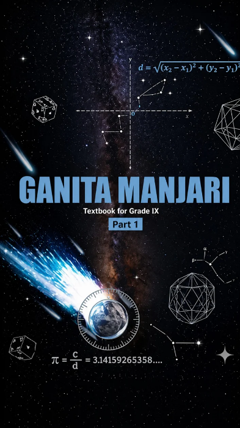

CLASS-9 MATHEMATICS- GANITA MANJARI PART-1
NCERT Solutions

Chapter-wise solutions
Class 9 Mathematics - Ganita Manjari Part-1
Chapter-1
(Orienting Yourself: The Use of Coordinates)
Open →
Chapter-2
(Introduction to Linear Polynomials)
Open →
Chapter-3
(The World of Numbers)
Open →
Chapter-4
(Exploring Algebraic Identities)
Open →
Chapter-5
(I’m Up and Down, and Round and Round)
Open →
Chapter-6
(Measuring Space: Perimeter and Area)
Open →
Chapter-7
(The Mathematics of Maybe:
Introduction to Probability)
Open →
Chapter-8
(Predicting What Comes Next:
Exploring Sequences and Progressions)
Open →